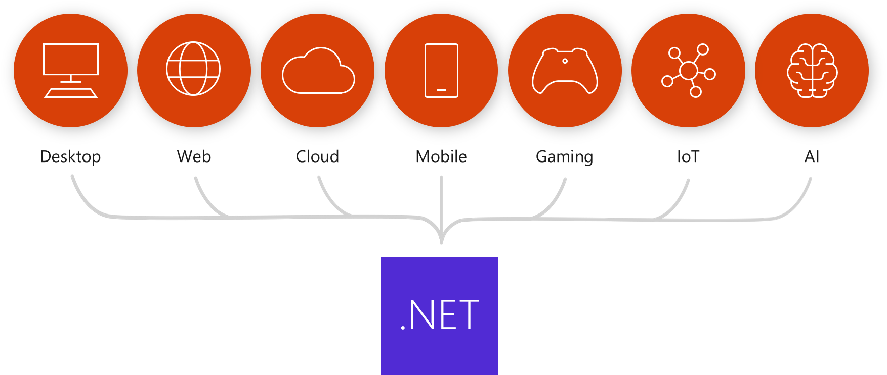
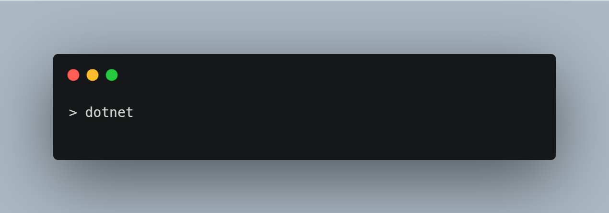
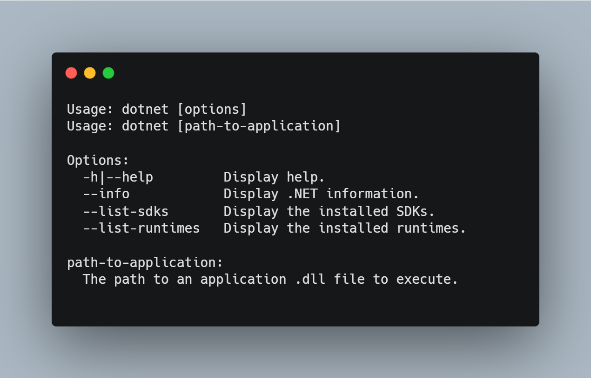

What is .NET?
.NET is a free, cross-platform, open source developer platform for building many different types of applications.
With .NET, you can use multiple languages, editors, and libraries to build for web, mobile, desktop, games, and IoT.

Why Choose .NET
There are various reasons to begin working with .NET:
- .NET features modern language constructs to improve developer productivity
- .NET allows you to develop applications for various platforms like Android, iOS, Windows, and Linux
- .NET applications provide better response times and require less compute power
- .NET provides you with immediate security benefits via its managed runtime
- .NET is open-source and available on GitHub
You can learn more about .NET and its offerings here.
Please go ahead and download the .NET 5 SDK if you haven't earlier
Download the .NET SDK
Once the SDK is installed, you can verify the download by going to the Command Prompt or Terminal and inputting the following:

If you have installed the SDK properly, you should see the following result:

Let's Create Our App Now